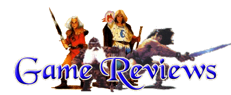

One thing that can add enjoyment to HQ is bringing in new monsters.
To represent these new monsters, you need new figures. Miniature companies
offer a whole array of miniatures for purchase
(for a list of Miniature companies, see the Links Page).
Another popular alternative to buying miniatures is to use the figures
made for other games. Below are some reviews that I wrote for ChaosOrc's HQ Newsletter
during the summer of 1998 detailing three different games that I have.
I use the figures, boards, and other pieces in the quests that I write.